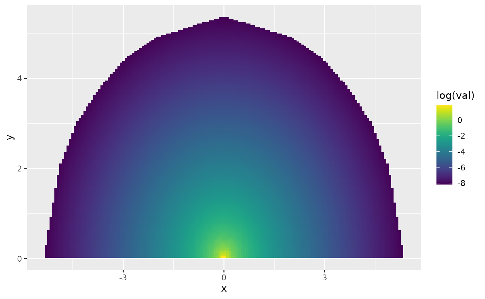
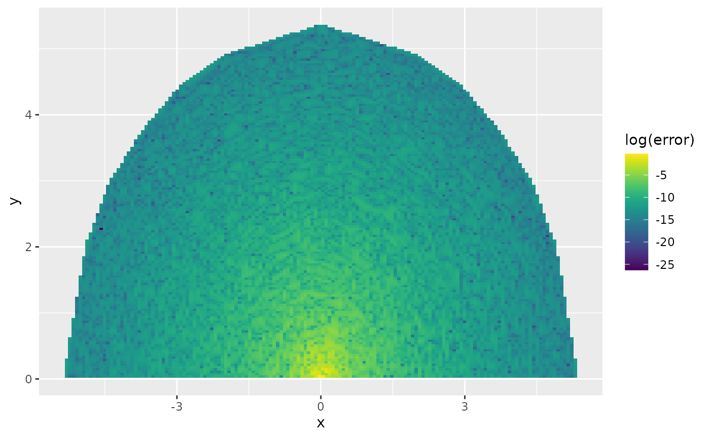

Numerical approximations of WCP priors
Created: 2023-12-13. Last modified: 2024-07-14.
Source:vignettes/numerical_WCP.Rmd
numerical_WCP.RmdIn this vignette, we will show how to use the WCPprior package to obtain 1D and 2D numerical and analytic WCP prior.
Import relevant libraries.
Bivariate WCP prior of mean and standard deviation of Gaussian distribution.
The theoretical details of deriving bivariate WCP prior density can be found on Recipe 1, Section 4.2 from https://arxiv.org/pdf/2312.04481.pdf, and its implementation details can be found on Recipe 4, Section 5.2 from the same document.
The function that gives numerical approximation of bivariate WCP
prior requires some information.
- A function that takes values of the two-dimensional parameter and returns the Wasserstein distance .
- , the user-specified hyperparameter for WCP prior.
- cutoff parameter that determines upper bound of the Wasserstein
distance
in case of the parameter space
is unbounded. That is, by solving
,
the upper bound
.
Thus, we can approximate the WCP prior on a bounded domain.
- region information that specifies boundary of the bounded domain of
determined by cutoff, type of shape of the domain.
- mesh width that determine how fine the mesh is on the bounded
domain.
Let us define the Wasserstein distance function, where
x[1] is the mean parameter, x[2] is the
standard deviation parameter:
W_func <- function(x){sqrt(x[1]^2+x[2]^2)}We now define the parameters and the region:
cutoff = 0.01
mesh_width = 0.3
# user-specified hyperparameter
eta = 1
region = list(type = 'conic', lower_angle = 0,
upper_angle = pi, base_theta = c(0,0))Observe that the type of region is conic, the range of
the angle of the conic region is from 0 to
and the base model parameter is (0,0).
The following code performs the approximation by using the
WCP_2D_Numerical_Density() function. By setting
parallel = TRUE, user can run the function with multiple
cores and NumCores specifies number of cores. We will set
visual_mesh = TRUE to obtain a plot of the region along
with the constructed mesh.
result = WCP_2D_Numerical_Density(W_func,
eta = eta,
mesh_width = mesh_width,
cutoff = cutoff,
region = region,
parallel = TRUE,
NumCores = 2,
visual_mesh = TRUE)
This function returns the values of the approximated density along the level curves. Our goal now is to plot the approximated density. To this end, we will obtain the approximated values at the mesh, then plot its values on a pixelated cover of the mesh.
We begin by extracting the mesh and creating a pixelized mesh with
the fm_pixels() function from the fmesher
package.
We will now obtain the values of the approximated density at the mesh
nodes. To this end, we need the elements basis and
val from the returned list. The basis contains
the matrix that maps the level curve locations to the mesh nodes, and
val contains the values of the approximated density at the
level curve locations.
basis <- result$basis
dens_val <- result$val
dens_mesh <- basis(dens_val)Let us obtain the values of the approximated density at the pixelated mesh:
pxl$val <-
fm_evaluate(mesh, pxl, field =
dens_mesh)Let us now plot the approximated density in log scale:
library(viridis)
ggplot() +
geom_tile(
data = pxl,
aes(geometry = geometry, fill = log(val)),
stat = "sf_coordinates"
) + scale_fill_viridis() 
Now we show the absolute error between the true and the approximated densities. We begin by obtaining the values of the true density at the pixelated locations:
library(sf)
coord_pxl <- st_coordinates(pxl)
# compute the true density
true_WCP_density = ( 1/sqrt(coord_pxl[,1]^2 +
coord_pxl[,2]^2) ) * eta *
exp(-eta * sqrt(coord_pxl[,1]^2 +
coord_pxl[,2]^2))/piWe can now add the absolute errors at the pxl list:
pxl$error <- abs(pxl$val - true_WCP_density)Now, the error plot in log scale:
ggplot() +
geom_tile(
data = pxl,
aes(geometry = geometry, fill = log(error)),
stat = "sf_coordinates"
) + scale_fill_viridis() 
To compute the total variation distance between the true and approximated distribution, we can do the following. We start by obtainig the lumped mass matrix, which is a matrix that contains the areas of the triangles of the mesh:
mass_lump_C <- result$CLet us now obtain the value of the true density at the mesh locations:
true_WCP_density_mesh = ( 1/sqrt(mesh$loc[,1]^2 +
mesh$loc[,2]^2) ) * eta *
exp(-eta * sqrt(mesh$loc[,1]^2 +
mesh$loc[,2]^2))/piWe can now compute the approximation of the total variation norm:
TVD_error = 0.5 * (sum(mass_lump_C %*%
abs(matrix(dens_mesh,ncol = 1) -
matrix(true_WCP_density_mesh,ncol = 1))) +
cutoff)
print(TVD_error)## [1] 0.01822381The WCPprior package also provides a function to compute
point-wise analytic bivariate
WCP
prior of mean and standard deviation of Gaussian distribution. To use
this function, users just need to provide values of parameters,
and base model mean parameter
.
The base model standard deviation parameter is fixed to 0. Now we use
this function to compute the densities on all the coordinates where the
numerical approximation densities are computed.
Let us start by obtaining the analytic density with the help of the
WCP2_2D_Gaussian_analytic() function
analytic_density = numeric()
for (i in 1:length(coord_pxl[,1])){
analytic_density[i] =
WCP2_2D_Gaussian_analytic(mean =
coord_pxl[i,1],
std = coord_pxl[i,2],
eta = 1,
base_mean = 0)
}Let us now compare the above density with the true density we computed manually:
## [1] 0We will now plot the analytic density:
data = cbind(as.vector(coord_pxl[,1]),
as.vector(coord_pxl[,2]),
as.vector(analytic_density))
data = data.frame(data)
g = ggplot(data, aes(X1, X2, fill = log(X3)))+
geom_raster()+
scale_fill_viridis() +
labs(x = expression(theta[1]), y = expression(theta[2])) +
guides(col = guide_colourbar(title = "Density"))+
theme(legend.position = "top",
legend.key.height = unit(0.1, 'cm'), #change legend key height
legend.key.width = unit(0.5, 'cm'), #change legend key width
legend.title = element_text(size=7), #change legend title font size
legend.text = element_text(size=5),#change legend text font size
axis.text=element_text(size=7),
axis.title=element_text(size=7))
g
WCP prior of reciprocal of degree of freedom of t-distribution.
The theoretical implementation details of
WCP
prior of reciprocal of degree of freedom parameter of t-distribution can
be found at Section 5.1 from https://arxiv.org/pdf/2312.04481.pdf. Let
denote the parameter of interest. To use our function to construct
numerical approximation of WCP prior of a single parameter, users need
to provide the following information in general:
(1), A function that takes values of the two-dimensional parameter
and returns the Wasserstein distance
.
(2),
,
the base model parameter. (3),
,
the user-specified hyperparameter for WCP prior.
(4), cutoff parameter.
(5), Lower and upper bound of the domain of
and if the two values are included or not.
Since is a bounded domain, we do not need to provide the cutoff parameter in this case. Also, an analytic expression of is not available in our case, we have to compute it numerically by numerical integration (see Remark 1 from https://arxiv.org/pdf/2312.04481.pdf).
library(fGarch)
# The Wasserstein distance function by numerical integration
W2distanceGt = function(xi){
# xi is 1/nu where nu is dof of t-distribution
integrand = function(p,...){
abs(qstd(p,...) - qnorm(p))^2
}
integral = integrate(Vectorize(integrand),0,1,
nu = 1/xi,subdivisions = 10000L)$value
return (integral^(1/2))
}However, to call the above function frequently is not economic, we construct an interpolated function for by the following code.
# a sequence of xi
Xi = seq(from = 0.01,to = 0.49,by = 0.01)
# obtain a sequence of W(xi) by W2distanceGt function
W2distance = c()
xi = c()
for (i in 1:length(Xi)){
# skip the case of problematic numerical integration
temp = try(W2distanceGt(Xi[i]), silent = FALSE)
if ('try-error' %in% class(temp)){
next
}
W2distance = c(W2distance, W2distanceGt(Xi[i]) )
xi = c(xi, Xi[i])
}
# the interpolated function of W(xi)
W2d = splinefun(xi, W2distance, method = "hyman")We determine by requiring .
alpha = 0.3
U = 0.1
eta = -log(alpha)/W2d(U)Now we are ready to call the function to compute numerically approximated WCP prior. is the base model parameter. and denote lower and upper bound of . and indicate if and should be included into the interval of the parameter of interest. denote mesh width of the domain. User may instead input which specifies number of mesh nodes to determine the mesh.
result = WCP_1D_Numerical_Density(base_theta = 0,
L = 0,
L_included = TRUE,
U = 0.5,
U_included = FALSE,
W_func = W2d,
eta = eta,
mesh_width = 0.001)The output contains a vector of values of and a vector approximated densities evaluated at those . The visualization of the result is:
data <- data.frame(x = result[,1], density = result[, 2])
ggplot(data, aes(x = x, y = density)) + geom_line()